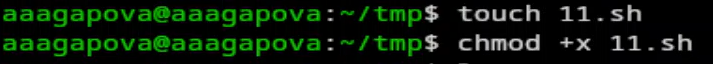
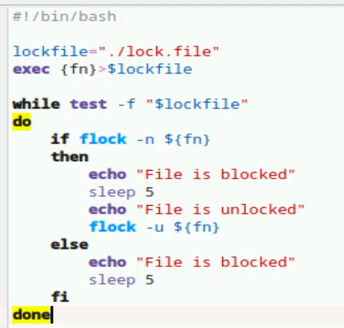
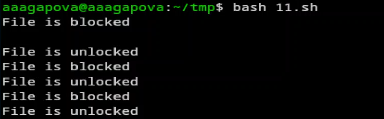
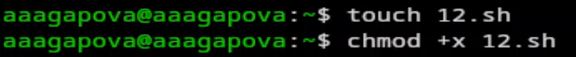
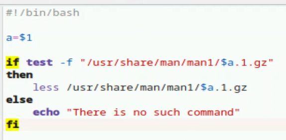
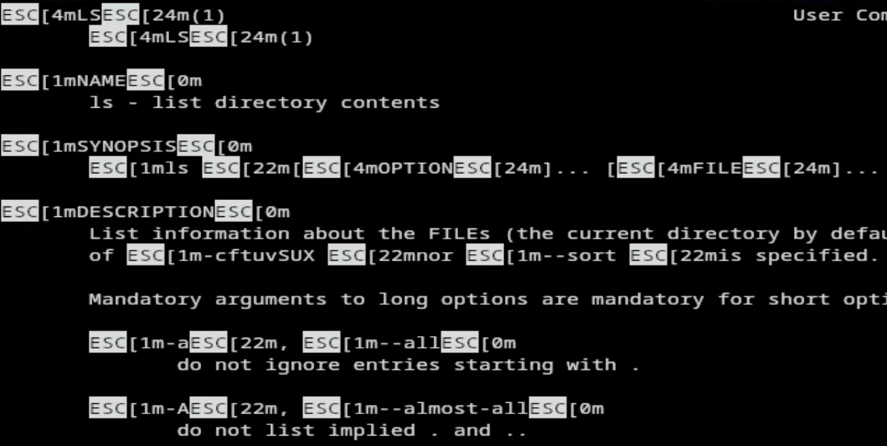
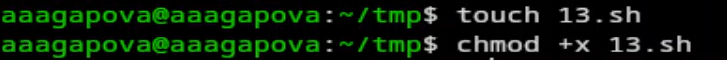
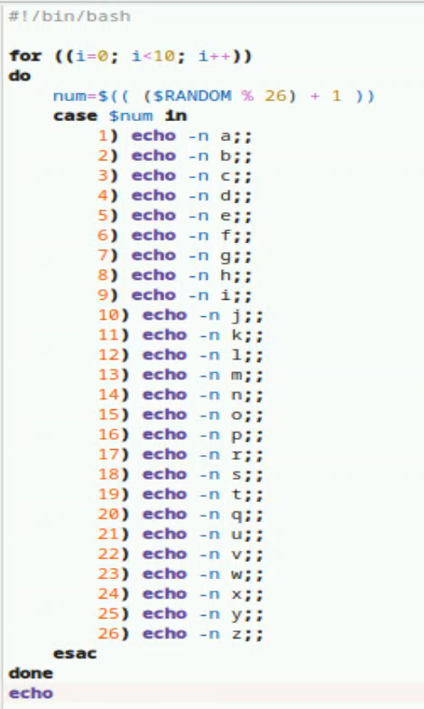
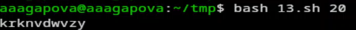

Российский университет дружбы народов им. П. Лумумбы
Цель работы
Изучить основы программирования в оболочке ОС UNIX. Научиться писать
более сложные командные файлы с использованием логических управляющих
конструкций и циклов.
Задание
Написать командный файл, реализующий упрощённый механизм семафоров.
Командный файл должен в течение некоторого времени t1 дожидаться
освобождения ресурса, выдавая об этом сообщение, а дождавшись его
освобождения, использовать его в течение некоторого времени
t2<>t1, также выдавая информацию о том, что ресурс используется
соответствующим командным файлом (процессом). Запустить командный файл в
одном виртуальном терминале в фоновом режиме, перенаправив его вывод в
другой (> /dev/tty#, где # — номер терминала куда перенаправляется
вывод), в котором также запущен этот файл, но не фоновом, а в
привилегированном режиме. Доработать программу так, чтобы имелась
возможность взаимодействия трёх и более процессов.
Реализовать команду man с помощью командного файла. Изучите
содержимое каталога /usr/share/man/man1. В нем находятся архивы
текстовых файлов, содержащих справку по большинству установленных в
системе программ и команд. Каждый архив можно открыть командой less
сразу же просмотрев содержимое справки. Командный файл должен получать в
виде аргумента командной строки название команды и в виде результата
выдавать справку об этой команде или сообщение об отсутствии справки,
если соответствующего файла нет в каталоге man1.
Используя встроенную переменную $RANDOM, напишите командный файл,
генерирующий случайную последовательность букв латинского алфавита.
Учтите, что $RANDOM выдаёт псевдослучайные числа в диапазоне от 0 до
32767.
Выполнение лабораторной
работы
1.Создаю исполняемый файл для первого задания.

Создание файла
2.Пишу программу.

Код
3.Результат работы программы.

Результат
4.Создаю исполняемый файл для второго задания.

Создание файла
5.Пишу программу.

Код
6.Результат работы программы.

Результат
7.Создаю исполняемый файл для третьего задания.

Создание файла
8.Пишу программу.

Код
9.Результат работы программы.

Результат
Выводы
Я изучила основы программирования в оболочке ОС UNIX, научилась
писать более сложные командные файлы с использованием логических
управляющих инструкций и циклов.